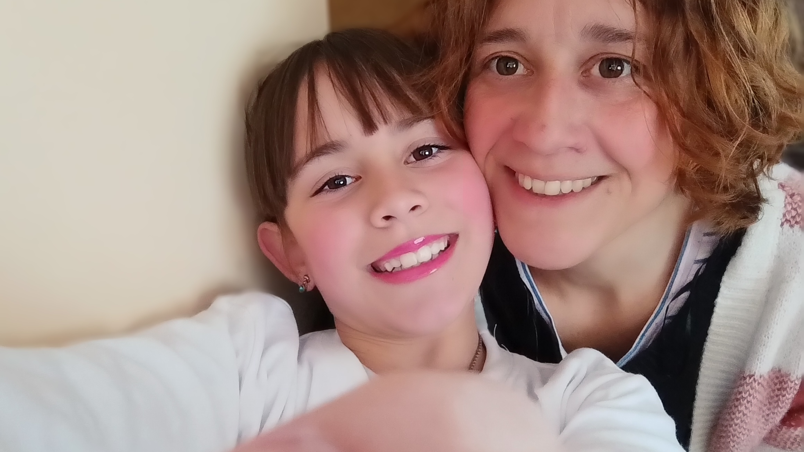

About Me
Maria Virginia Rubio
Vicky
Hi! Im Maria Virginia, 47 years old, from Montevideo, Uruguay.
I just finished Worldwide Pathway last july and now Im starting here at BYU the degree of Software Development BS.
I love the animals, live in contact with nature, the gardening, be at home with my family and enjoy little special life moments.
I' married with Alejandro and I have a 9 years old daugther called Albertina. We are the three members of a Scout Group and we enjoy these activity together and helping others.
I work for myself from 2011, like as SEO consultant. I love my work because permit me organize my time to be with my daughter. I started the traditional university lots of years ago but i didn't continue it, now I have a new opportunity to achieve my goal and have my degree.
I discover this opportunity for a friend that recommended me the program and I love the metodology of learning, I think is absolutly awesome.
Im not member of the Church, Im catholic but have some friends and neighbords that are members. Im really thanksfullyfully with my partners and techers for the acceptance and respect of my faith.
I have a favourite quote that is: "Try and leave this world a little better than you found it." Baden Powell